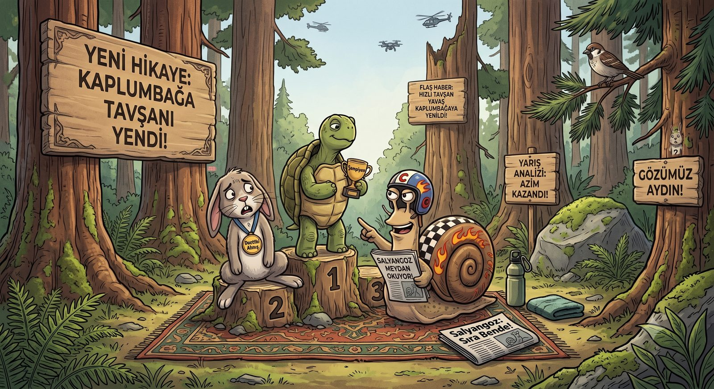

Sakin Yaşam
Peki tam olarak neyi yavaşlatıyoruz?
Sakin yaşam (slow living) denince akla genelde şu geliyor: her şeyi bırak, bir zeytinliğe yerleş, telefonu denize at. Kulağa güzel geliyor ama çoğumuz için gerçekçi değil. İşimiz var, şehirde yaşıyoruz, teknolojiyle ekmek kazanıyoruz.
Bu yüzden buradaki sakin yaşam bir coğrafya değil, bir ilişki. Kaçtığın bir yer değil; hızla, işle, ekranla ve zamanla kurduğun ilişkinin niteliği.
Hızın zıddı yavaşlık değil
Alman sosyolog Hartmut Rosa'nın güzel bir tespiti var: hızın asıl zıddı yavaşlık değil, bağ kurmak. Modern hayatın bizi yorması hızından değil, o hızın bizi dünyaya yabancılaştırmasından. Her şey "halledilecek bir iş"e dönüşünce; manzara da, kahve de, insanlar da sadece bir yapılacaklar listesi maddesi oluyor.
Yavaşlamak, o listeyi bir anlığına bırakıp yeniden bağ kurabilmek. Şehrin göbeğinde, betonların arasında güneşin batışını izlerken hissettiğin o şey — işte mesele o.
Akıntının hızını yavaşlatamayız. Ama akıntının içinde sağlam bir kaya gibi durabiliriz.

Üç ilke, tek cümle
Bu kulübün bütün felsefesini üç sade ilkeye indirdik: hızı kendi elindeki bir vitese çevirmek, kaosun ortasında dinginliğini koruyabilmek, ve bu yolda tökezlemeyi kusur değil, doğal bir veri saymak.
Arkasında Seneca'dan Ivan Illich'e uzanan geniş bir külliyat var — ama merak etme, o kapıları sadece "daha derine inmek isteyene" açıyoruz. Yazıların içinde, istersen tıklarsın.